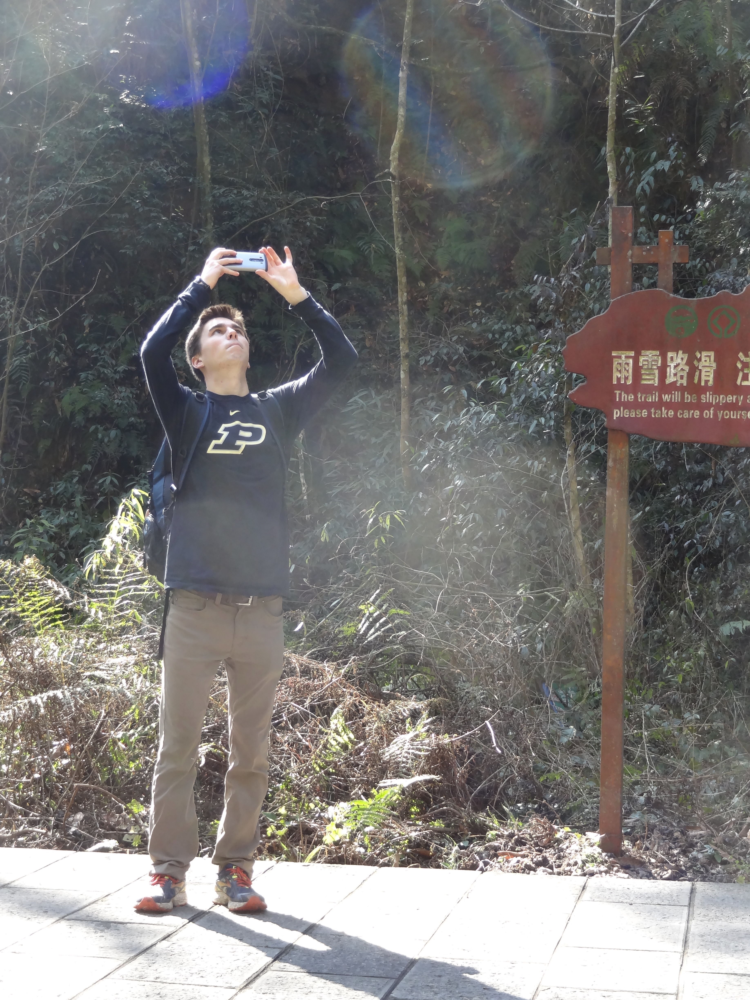
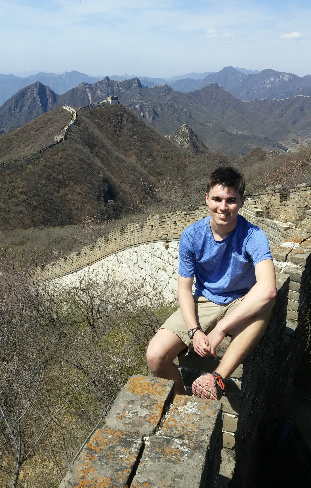
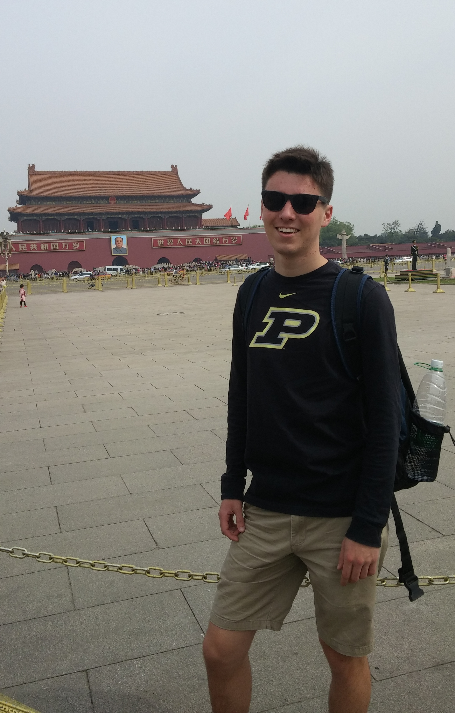

Hi! I'm Peter, and this is my blog. I am a senior at Purdue University, majoring in Mechanical Engineering. At Purdue, I play the mellophone in the Boiler Brass Basketball Pep Band, and the French Horn in concert band. I am involved in the Science Olympiad Club, the Sports Analytics Club, and numerous intramural sports teams. I enjoy running, and have run the Purdue Half-Marathon each of the past three years. I know all the Chinese that one can learn in three semesters. I am from Bloomington, Indiana.
**Update**
I graduated from Purdue in May 2018. I now live in southeast Michigan, where I work as an engineer for General Motors.

This blog is documenting my semester abroad at Jiao Tong Univeristy in Shanghai. The home page will feature the latest blog post. Previous posts will be viewable under the 'Posts' tab. I plan on having journal posts that detail my experiences, as well as topical posts that cover different aspects of life in China, colored with photos and personal anecdotes. If you prefer, you can skip straight to the 'Photos' tab for strictly media.
The study abroad program ran from January 5th through May 12th, 2017, and I stayed an extra week at the end of the semester to travel some more. I was hoping to have the website ready before I went so I could post weekly updates. Alas, life is complicated and the website is launching eight months late.
I decided to create this blog primarily to teach myself web design. I coded the entire website from scratch (except for Lightbox, a script for the photo display). I apologize for any readability issues related to my amateurism. For optimal viewing, I recommend a different monitor with a 13" screen.
I knew I wanted to study abroad, and I began with a couple of places in mind. I took German in high school, and there is a strong engineering tradition in Germany, so I considered Germany and Switzerland. Istanbul, in Turkey, and New Zealand were also on the list because they are super beautiful and I have wanted to go there for a long time (Lord of the Rings, anyone?). Finally, China made the list because of its status as an emerging economic power.
I settled on China because I felt that it would be the most important international partner for the US, economically and politically, over my lifetime. As someone with an interest in global politics, this was a strong appeal for me. Additionally, the flagship study abroad program for Purdue Engineering was in Shanghai, at Jiao Tong University. There are several partner universities that are dubbed Engineering Term Abroad (ETA) destinations, where specific engineering classes have been pre-approved as being able to transfer to Purdue. Without the engineering classes transferring, it would be very hard to fit a semester abroad into an undergraduate engineering schedule.
The ETA programs typically have around 5 students per semester, though most are growing. The flagship program at SJTU is called a 'class size' program, and has a whole cohort. In 2017 there were 39 of us, all from the College of Engineering: 36 Mechanical, 2 Biomedical, and 1 Industrial.


I decided to go on the SJTU ETA program late in my freshman year, and crammed 3 semesters worth of Chinese into my schedule to get ready. There is no language requirement for the program, as classes are in English, but I liked the challenge and decided to jump in with both feet. Most people in the program didn't know any Chinese at the start; I think only 7 of the 39 students in the 2017 cohort had any language background at all.
Finally, I want to give a shout out to Mitch Daniels, the President of Purdue. While I don't always see eye to eye with him, he has made it a priority to encourage more Purdue students to study abroad. To accomplish this, the University has made a $3000 scholarship available to anyone who does a semester-long study abroad program, and $1000 available to anyone doing a shorter, 1-2 week trip. This scholarship makes semester-long programs comparable to, and sometimes cheaper than, a semester at Purdue. All the side travelling ultimately made the semester quite expensive, but it was money well-spent. Study abroad helps create a global awareness amung students, and helps fewer people graduate as provincial midwesterners. I am grateful for the opportunities provided to me by Purdue, and appreciate President Daniels' vision in this regard.
Panoramas: Zhangjiajie National Forest Park (top), Huangshan National Scenic Area (bottom)